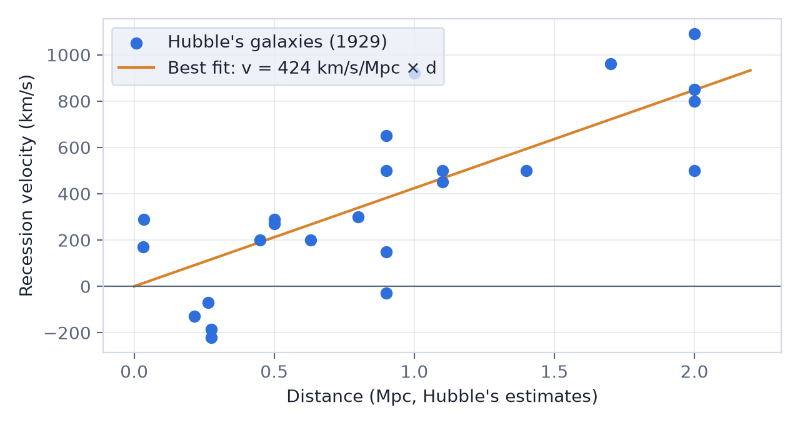
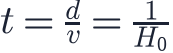
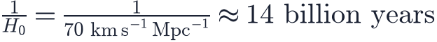

In this lesson you will learn
|
A surprising pattern
In the 1910s Vesto Slipher measured the spectra of spiral "nebulae" and found that most of them are strongly redshifted: they are moving away from us, some at more than 1 000 km/s. At the time nobody knew how far away they were.
In 1927 the Belgian physicist and priest Georges Lemaître combined these velocities with distance estimates and proposed that the universe is expanding, deriving a linear relation between velocity and distance. In 1929 Edwin Hubble, using his Cepheid-based distances, published the relation that made the idea famous.

The law
The Hubble–Lemaître law states that, on average, a
galaxy's recession velocity  is proportional to its distance
is proportional to its distance  :
:
The constant of proportionality  is the Hubble
constant. It is usually quoted in kilometres per second per megaparsec:
is the Hubble
constant. It is usually quoted in kilometres per second per megaparsec:
This means that a galaxy 1 Mpc farther away recedes about 70 km/s faster. A galaxy at 100 Mpc recedes at about 7 000 km/s.
Measuring the velocity The velocity comes from the redshift, for nearby galaxies. The law is therefore often written . For distant galaxies this simple form no longer applies, and we need the full theory of Level 2. |
Hubble's famous error Hubble found km/s/Mpc, about seven times today's value. The distances were right in pattern but wrong in scale because, among other problems, the Cepheid calibration of the 1920s mixed up two different kinds of pulsating stars. The linear relation survived; the number did not. |
Why proportional velocities mean expansion
Imagine a loaf of raisin bread rising in the oven. Every raisin moves away from every other raisin. If the dough doubles in size in one hour, a raisin 1 cm from you ends up 2 cm away (it moved at 1 cm/h) while a raisin 3 cm away ends up 6 cm away (it moved at 3 cm/h). Velocity is proportional to distance, exactly the Hubble–Lemaître law, and every raisin sees the same pattern.
We are not at the centre All galaxies moving away from us does not put us at a special place. An observer in any other galaxy would see the same law. Expansion has no centre. You will explore this in lesson L1.3. |
The Hubble time: a first age
If galaxies have always moved at their present speeds, how long ago were they all
together? A galaxy at distance  moving at
moving at  needed a time
needed a time

This is the Hubble time. The same for every galaxy! Converting units:

Converting units One megaparsec is km, so . Then s. Dividing by the seconds in a year gives about 14 billion years. |
The true age of the universe is about 13.8 billion years. The agreement is partly a coincidence: gravity slowed the expansion early on and dark energy has sped it up recently. We will calculate the age properly in Level 3.
Real data are noisy
Galaxies also move through space because of the gravitational pull of their neighbours. These peculiar velocities are typically a few hundred km/s. Nearby, they can even exceed the expansion velocity: the Andromeda galaxy is actually approaching us at about 300 km/s.
That is why astronomers measure  with galaxies far enough away that the
expansion velocity dominates, and why many galaxies are needed for a reliable
fit.
with galaxies far enough away that the
expansion velocity dominates, and why many galaxies are needed for a reliable
fit.
Try it: Hubble Diagram Fitter Fit Hubble's original data and a simulated modern sample. Compare the resulting Hubble times. |
Today's value and the Hubble tension
Modern measurements agree that  is close to 70 km/s/Mpc, but not perfectly:
the Planck satellite's analysis of the early universe gives about 67.4, while
Cepheid-calibrated supernovae give about 73. This few-percent disagreement is
known as the Hubble tension and is one of the open questions of cosmology.
is close to 70 km/s/Mpc, but not perfectly:
the Planck satellite's analysis of the early universe gives about 67.4, while
Cepheid-calibrated supernovae give about 73. This few-percent disagreement is
known as the Hubble tension and is one of the open questions of cosmology.
Remember this
|